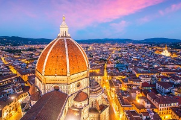

Florença

Introdução | Localização | Multimedia | Informação | Home
Florença (em italiano: Firenze) é um munÃcipio italiano, sub-capital e maior cidade da região da Toscana e da provÃncia homônima, com cerca de 377 207 habitantes (1 007 252 a cidade metropolitana). Estende-se por uma área de 102,41 km², tendo uma densidade populacional de 3 683 hab/km². Faz fronteira com Bagno a Ripoli, Campi Bisenzio, Fiesole, Impruneta, Scandicci, Sesto Fiorentino.[1][2] Florença foi durante muito tempo considerada a capital da moda.
A cidade é considerada o berço do Renascimento italiano, e uma das cidades mais belas do mundo.[3][4] Tornou-se célebre também por ser a cidade natal de Dante Alighieri, autor da Divina Comédia, que é um marco da literatura universal e de onde a lÃngua italiana moderna tem várias influências. Nesse poema ele descreve a cidade de Florença em muitas passagens, assim como alguns de seus contemporâneos florentinos célebres, como Guido Cavalcanti, amigo que também era poeta e ativo na vida polÃtica da cidade, que também são personagens da obra. Também é florentino Cimabue, o último grande pintor italiano a seguir a tradição bizantina, e responsável pela "descoberta" de Giotto.
Florença tem origem num antigo povoado etrusco, e foi governada pela famÃlia Médici desde o inÃcio do século XV até meados do século XVIII. O primeiro lÃder da cidade pertencente à famÃlia Médici foi Cosme de Médici, que chegou ao poder em 1437. Foi um protector dos judeus na cidade, iniciando uma longa relação da famÃlia com a comunidade judaica. A Grande Sinagoga de Florença, também conhecida como Tempio Maggiore ("Templo Principal"), é considerada uma das mais belas da Europa. Destacam-se as diversas e belÃssimas catedrais de épocas e estilos diferentes. A cidade também é cenário de obras de artistas do Renascimento, como Michelangelo, Leonardo da Vinci, Giotto di Bondone, Sandro Botticelli, Rafael, Donatello, entre outros. Nesta cidade nasceram os papas Leão X, Clemente VII, Clemente VIII, Leão XI, Urbano VIII e Clemente XII.
📅✈️🇮🇹🍕😀
Há um ano apanhei um avião para Itália para ir comer pizza e adorei.
Há um ano apanhei um avião para Itália para ir comer pizza e adorei.